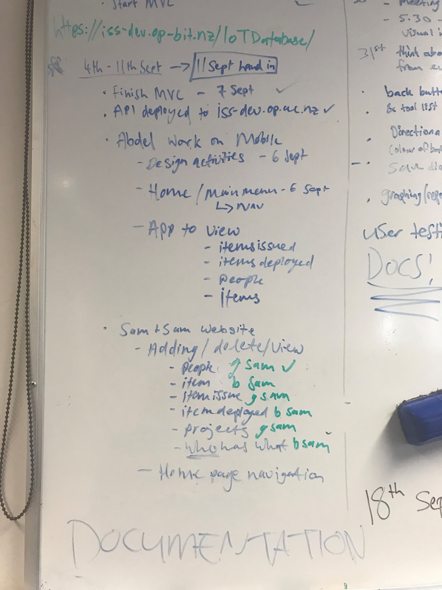
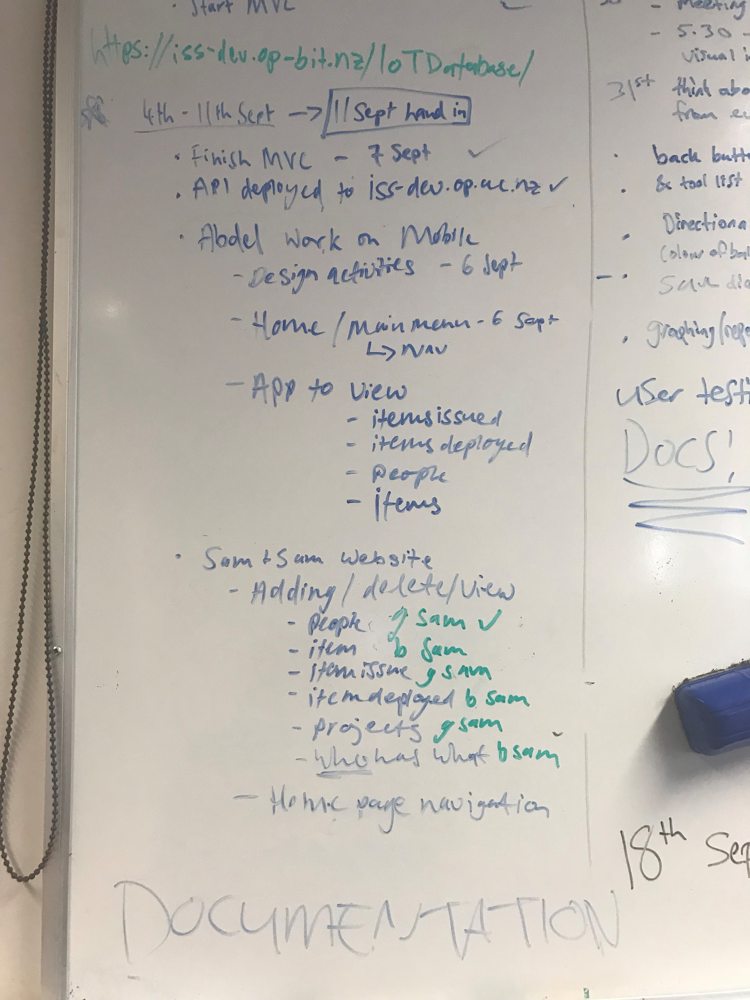

Professional Proficiency
- What is the overall quality of your code like?
- How well did you follow best practices in development?
- How well did you use appropriate version control?
- To what extent do you think you contributed an equal portion of the overall project?
The quality of my code has definitely improved since the start of the semester. For instance, during the squash app development, I didn’t plan anything and threw code at the wall hoping it would stick. Even though the AYA app was only the next task, I feel like my code improved immensely, it was more modular and easier to read.
When we were doing the two tasks (AYA and IoT Database) as a group, we tried to follow best practices as well as possible to avoid confusion about what everyone had to do and where it was happening. With the AYA app we didn’t do it so well - we had a whiteboard with a list of tasks and activities that had to be completed by the due date and we assigned them to ourselves which we then ticked off as we completed them. We tested where appropriate, mostly after writing a bit of code to get the main functionality and then testing if we’d made a fix and needed to check it was working. With version control, we didn’t do very well, we used GitHub but we figured since we were working on explicitly different parts of the app, we didn’t need to make our own branches of the app and have a pull request to a master branch when we’d completed an activity or task. This wasn’t great because nearly every time any of us committed to git, there was a merge conflict. Taking the challenges from the AYA app we made a few improvements and had a different way of doing things with IoT Database. We still used the whiteboard at the start to sort out the tasks that were involved and to divide them up, but we then put that on a Trello board so anyone could see what was in progress, completed and who was doing what. On our group’s GitHub, we set up a master branch for the API and then we each an individual branch that we worked on and then made a pull request when we completed a major change. This was so much better than before with the AYA app, it was a lot easier to have a better work flow by being that more organised and everyone was less confused.
 

For each task, except the Oculus (the files were too big to be pushed to GitHub), there was always a branch on the CommSoftTasks GitHub repo that was made to push work to. As outlined in the previous question, we used GitHub a lot with the group tasks and I used it for the ones we did individually too. I found it helpful to do regular commits so if I forgot to write what I did for a couple of days, I could go back through the git commits, with usually good commit messages, to see what had been completed those days.
The projects we worked on as a group were great; we all collectively agreed on tasks that we could do, made sure they were evenly split up and we all got them completed. If one person was struggling with their part of the task, the other two would help by either doing some pair programming or by taking on one of the other tasks they hadn’t completed yet. We all also have our own strengths that we were aware of and we optimised them to get the task completed to a pretty good standard. I feel that although I haven’t taken as many advanced programming courses as some of the other people in my group, I still contributed my fair amount. I did a lot of the frontend development and design, making sure the software we made worked well and looked good. I also did was the point person for the Otago Access Radio, trying to keep up with what they were wanting and keeping them happy.